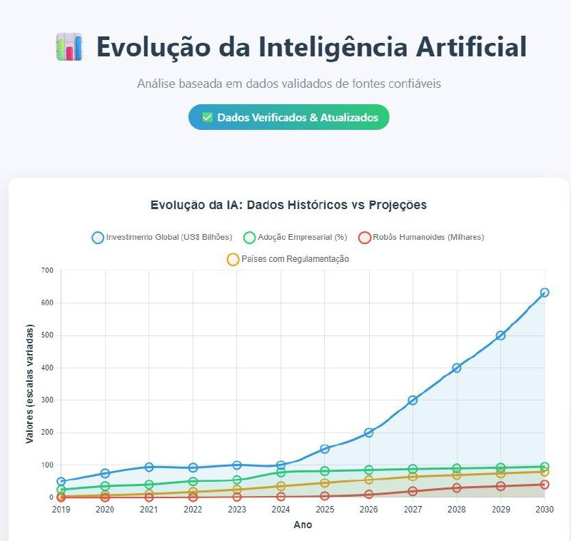
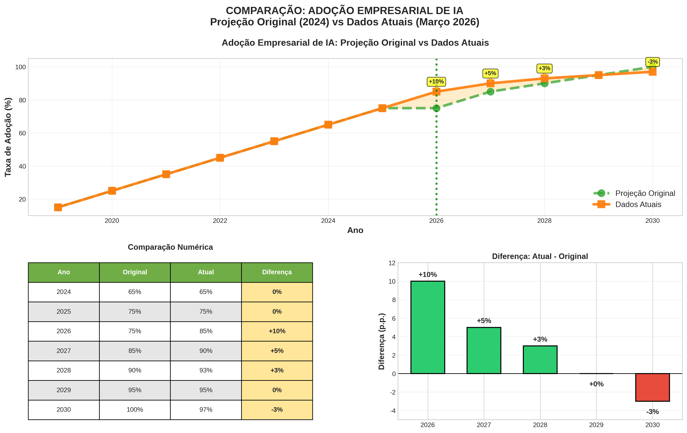
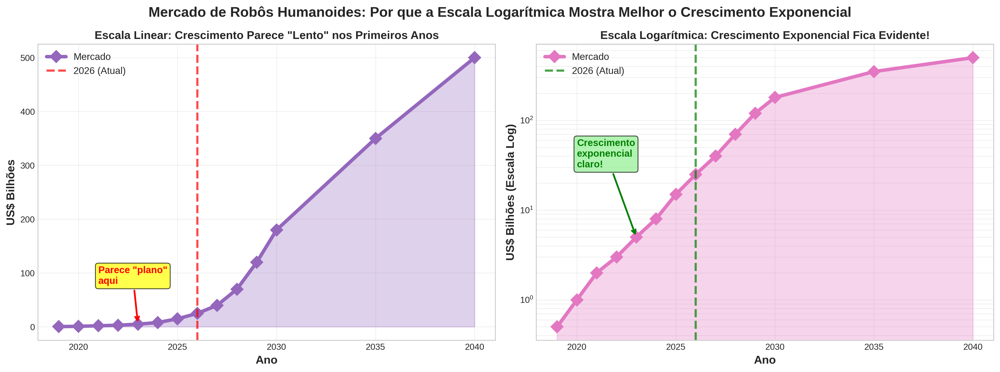
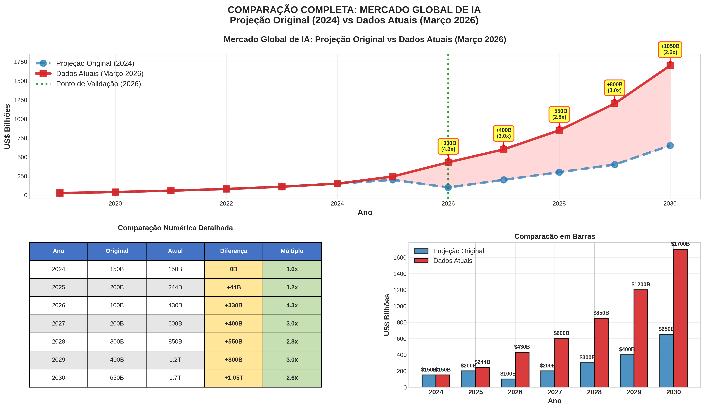
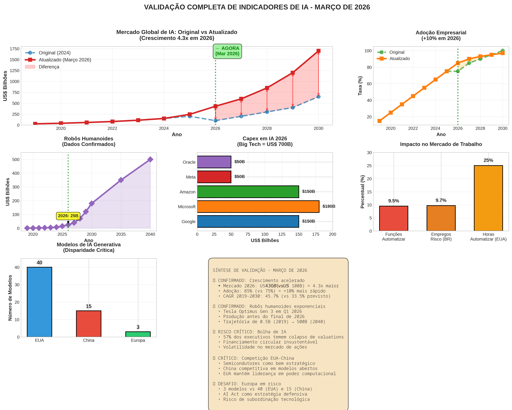

O laboratório por trás do manifesto e do curso "O Caminho Certo da IA": qualificação real em IA — sem hype e sem medo, com cada número ancorado em fonte.

O inemathink é onde a tese nasce: uma pergunta vira pesquisa verificada, a pesquisa vira manifesto, e o manifesto vira curso. Tudo com fonte e ressalva.
Deep research com verificação adversarial: cada afirmação passa por votação antes de virar conteúdo. Número sem fonte não entra.
A falha de IA não é o modelo — é falta de qualificação. O empoderamento é real, mas depende de quem usa e da tarefa.
O oposto do guru raso: afirmação com fonte, ressalva onde é previsão ou estudo contestado. Transparência é o método.
Pipeline de deep research: decompõe a pergunta, busca em paralelo, coleta fontes, extrai afirmações falsificáveis, vota adversarialmente (3 votos por afirmação) e sintetiza com citação.
Três entregas públicas, da mais rápida à mais profunda.
Página única com a tese e os números de contraste (40% · 95% · +78M · 12.200).
Abrir →2 trilhas, 3 módulos, 19 tópicos. Os 7 hábitos + as 12 habilidades, com camada de aprendizagem.
Fazer o curso →A base de evidência verificada — toda afirmação com fonte e ressalva.
Ler o dossiê →Gráficos da análise (em graficosfuturo/): histórico vs projeções de investimento, adoção empresarial, robôs humanoides e regulação.




Três caminhos, conforme seu tempo.
A tese inteira numa página, com os 4 números de contraste e a frase-âncora.
2 trilhas (Alavancar com IA · Ser insubstituível), 19 tópicos, com progresso e plano de 4 semanas.
Cada número com fonte, data e ressalva — a prova de que não é hype.